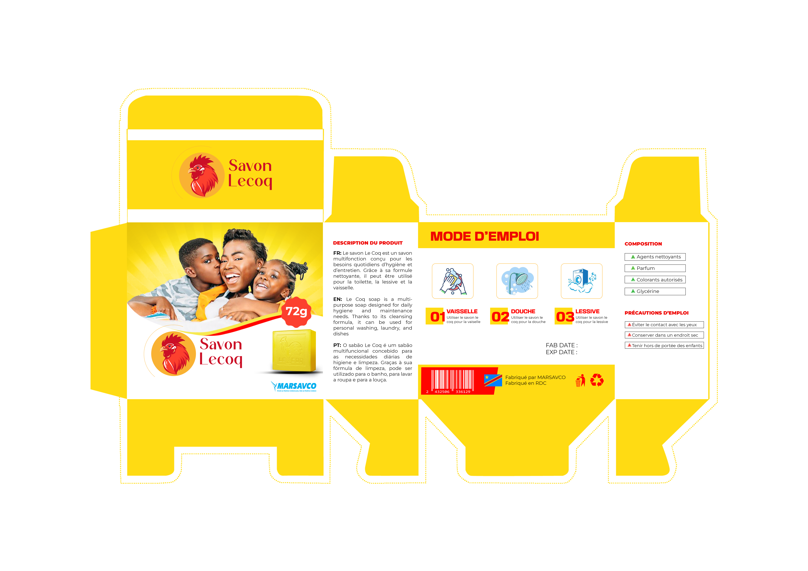
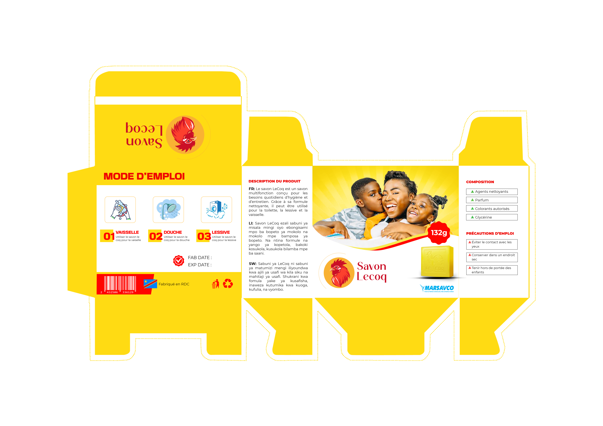
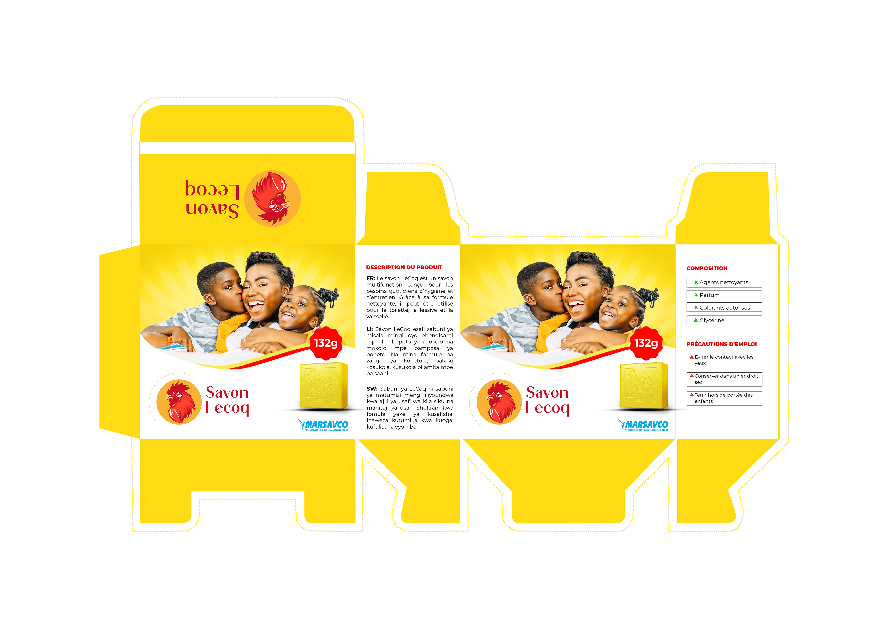

Création du Packaging Savon Le Coq
Présentation du projet
Ce projet consiste à concevoir une nouvelle identité visuelle pour le packaging du Savon Le Coq afin d'améliorer sa visibilité, sa reconnaissance et son attractivité auprès des consommateurs.
Problématique
Dans un marché fortement concurrentiel, l'emballage constitue un élément stratégique de communication. Le défi était de créer un packaging moderne capable d'attirer l'attention tout en valorisant la qualité du produit.
Objectifs du projet
- Moderniser l'apparence du produit
- Renforcer l'impact visuel en rayon
- Valoriser l'identité de la marque
- Améliorer la lisibilité des informations
- Créer une expérience visuelle cohérente
Choix graphiques
Le concept visuel repose sur l'utilisation de couleurs dynamiques, d'une hiérarchie visuelle claire et d'éléments graphiques capables de mettre en avant les qualités du savon.
Palette de couleurs
- Jaune : énergie, visibilité et fraîcheur
- Rouge : puissance visuelle et attractivité
- Blanc : lisibilité et équilibre graphique
Processus de conception
La conception a débuté par une phase d'analyse du marché et des emballages concurrents. Plusieurs pistes graphiques ont ensuite été explorées avant la réalisation de la version finale.




Résultat final
Le packaging obtenu présente une identité moderne et attractive tout en conservant les éléments essentiels permettant la reconnaissance du produit par les consommateurs.
Conclusion
Ce projet démontre l'importance du design packaging dans la valorisation d'un produit et dans la stratégie de communication d'une marque.
Vous avez un projet similaire ?
Afro Vecteur vous accompagne dans la création d'identités visuelles, de packagings et de supports de communication professionnels.
Demander un devis